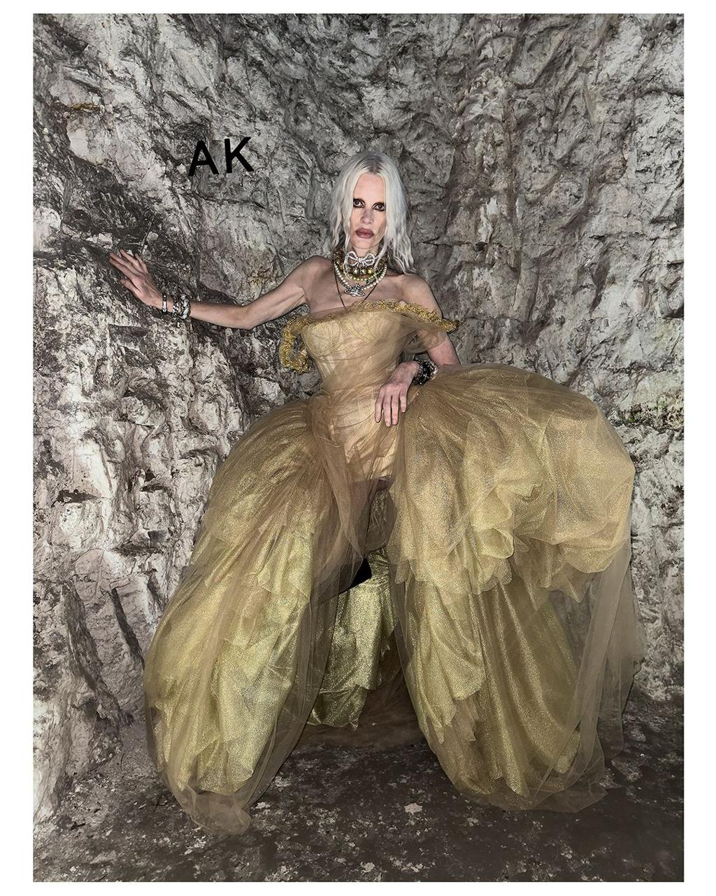
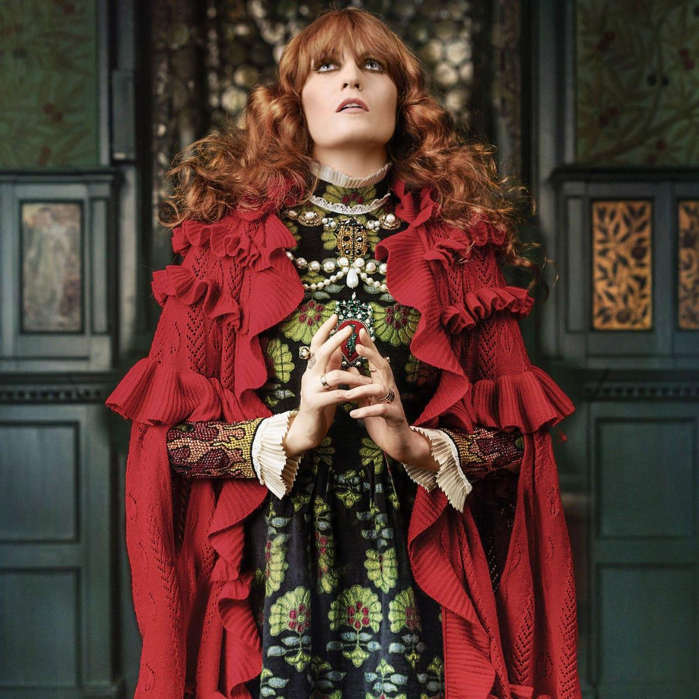
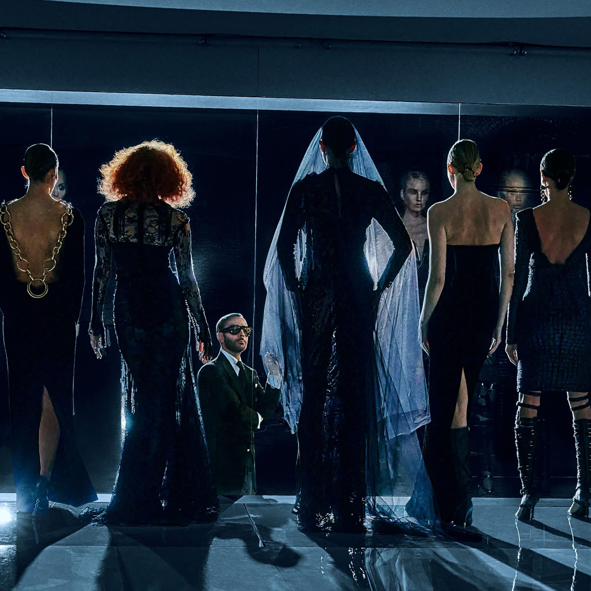
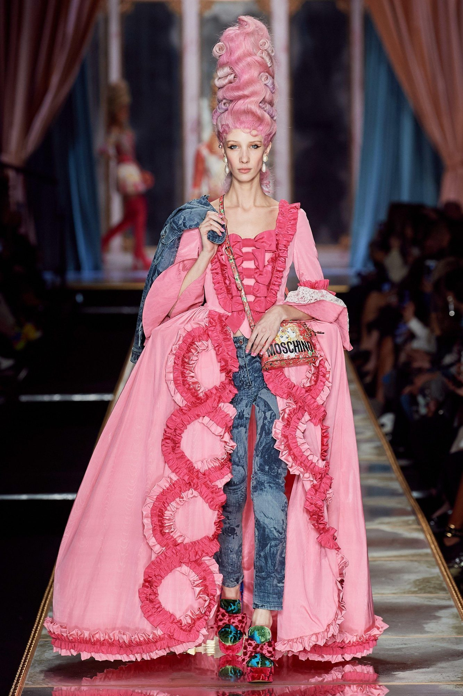
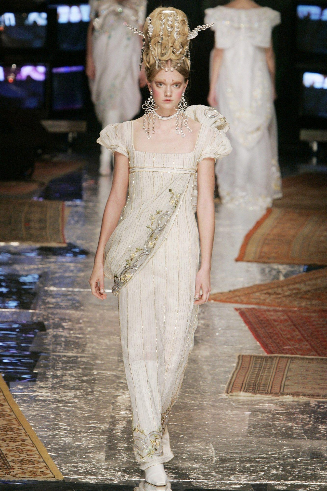
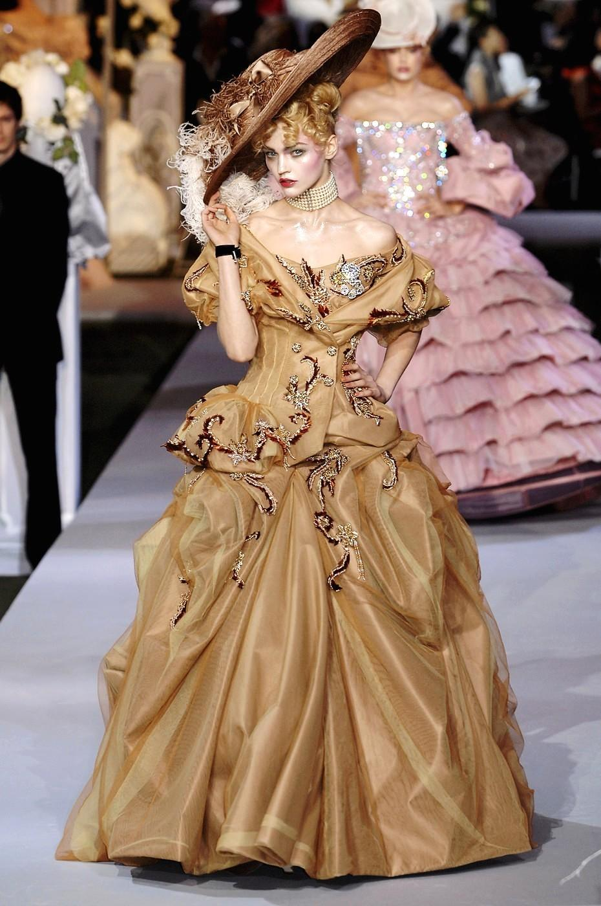
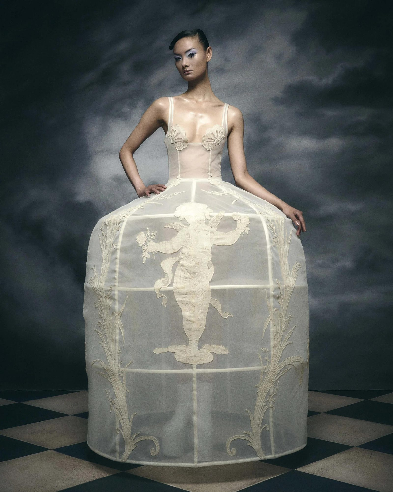
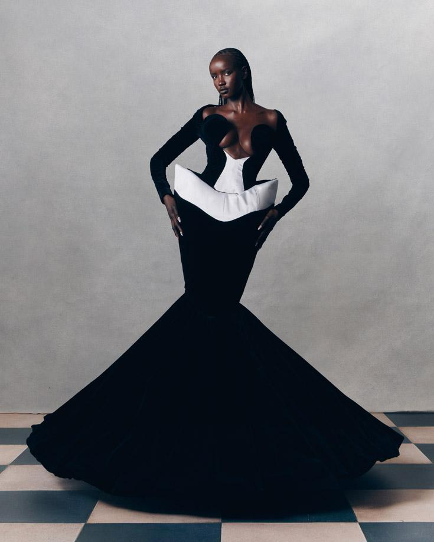
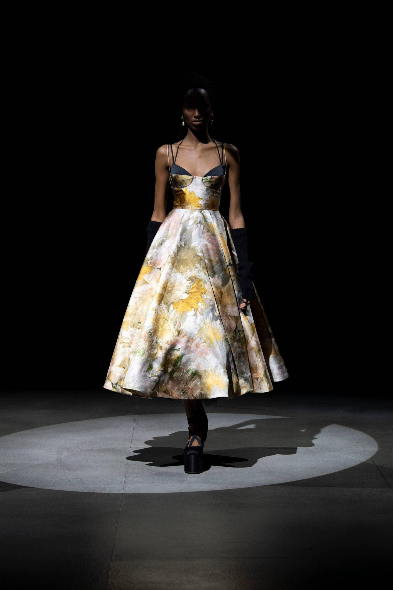

Keisha, Mutya and Siobhán enter the world of the period drama. Grand houses, elaborate balls, marriage markets, secret affairs and duels.
We take the codes and conventions of the period romance and turn them on their head. The women hold the rank. The men are the ones being pursued. The rituals of courtship become a game of power, competition and desire.
A garage record soundtracks 1815.
The Sugababes preside over a world of aristocratic excess and romantic intrigue. The period drama is played entirely straight, with the gender roles reversed.
THE FILM
We enter a grand country house in the middle of a party. A ballroom filled with guests, candlelight, elaborate costumes and the rituals of courtship. Men and women move through the rooms, exchanging glances, letters and invitations.
At the centre of it all are Keisha, Mutya and Siobhán, singing directly to camera. Composed, confident and entirely in control. Everything else moves around them.
As the night unfolds, we move between the ballroom, drawing rooms and grounds, discovering a series of moments within this world.
A letter passed across a crowded room. A proposal made before the entire assembly. A dispute played out in the library. A stolen encounter in a doorway. A confrontation that escalates into a duel at dawn.
The party gradually becomes more animated. The choreography grows more elaborate, the situations more heightened and the world increasingly caught up in the rhythm of the record.
At the drop, the ballroom transforms. The movements become sharper, the formations more precise. Courtship becomes a spectacle.
The film culminates at dawn. The ballroom is in disarray, the night's festivities over. Men lie collapsed across the floor around the Sugababes. At the centre of the chaos, the three women remain immaculate, still singing directly to camera.
The World
The world draws from the great period films. The Duellists, Dangerous Liaisons, Queen Margot, Barry Lyndon and The Leopard. Their sense of grandeur, composition and atmosphere informs a setting that feels tangible and lived in.
Everything is played with complete conviction. The romance, spectacle, rivalries and rituals of courtship are taken seriously, but the traditional gender roles are reversed.
The collision of this world with contemporary garage is what makes the film feel modern.
The music, choreography and visual language bring two seemingly disparate eras together in a way that feels unexpected and entirely its own.
STYLING & GLAMOUR
The Sugababes are the most glamorous women in the room.
Regency dress reinterpreted through contemporary high fashion. Vivienne Westwood's corsetry, Galliano's theatrical couture, McQueen's sculptural shapes and Tom Ford's glamour.
Empire lines, structured bodices, rich fabrics, embroidery and elaborate detailing. Historical silhouettes reworked into something powerful, modern and fashion-led.









Each woman has her own distinct look. Extravagant without becoming costume, balancing the romance of 1815 with the attitude of contemporary fashion.
ICONIC IMAGES
Each of the Sugababes has her own hero moment, built around a situation that gives her the space to command the frame.
The assembly. A ballroom filled with men in regimentals. Fans open in unison, forming a guard of honour around the Sugababes as they move through the room.
The refusal. A man kneels before the entire assembly. The room watches. Siobhán barely acknowledges him.
The hearing. The library. Rivals and petitioners make their cases across the room. At the head of the table, Mutya listens, unimpressed.
The letter. A folded letter passes hand to hand through the ballroom. We follow its journey through the crowd, catching fleeting glances and reactions along the way.
The duel. Dawn, wet grass. Keisha stands opposite her adversary, sabre drawn. Seconds at a distance, breath in the cold air, the country house behind them.
The last frame. Dawn in the ballroom. A final tableau, the men collapsed across the floor around the Sugababes. At the centre of the chaos, the three women remain immaculate, still singing to camera.
PRODUCTION & VFX
The film is grounded in live action, prioritising a location with the architecture, scale and interiors to carry the world.
Performers, choreography, costumes, props and as much of the environment as possible are captured in camera. Extras, blocking and composition create the density and scale of the party while keeping focus on the Sugababes.
VFX extend the architecture, crowds and surrounding environment beyond the physical limitations of the location, seamlessly extending the photography rather than drawing attention to themselves.
The result is a grand period setting, striking tableaux and considered styling, with the Sugababes at its centre.